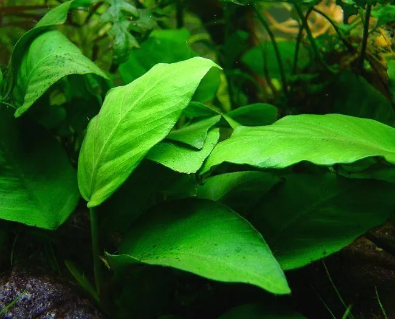

水生植物 · 植物界
水榕 Anubias barteri

天南星科多年生半水生草本，叶厚硬而耐阴，根状茎可附着岩石生长，是阴性水族箱中最耐养的观赏水草。
- 分类
- 门被子植物门纲木兰纲目泽泻目科天南星科属水榕属
- 栖息环境
- 热带雨林溪流、河岸与沼泽的浅水处，多附生于岩石或倒木上
- 地理分布
- 原产西非热带地区，中国及世界各地水族爱好者广泛栽培
- 保护级别
- 暂无评估；野生居群受栖息地破坏影响
物种志
水榕为天南星科水榕属多年生半水生草本，具粗壮的匍匐根状茎，可附着于岩石或沉木上。叶互生，卵形至椭圆形，长 8–20 厘米，革质厚硬，深绿色，叶脉明显，叶柄粗短。佛焰苞花序自叶腋抽出，苞片淡黄绿色，肉穗花序白色，花期不定期，水下极少开花。
水榕原产西非热带雨林中的溪流与河岸，常生长在水流平缓、光线被树冠遮蔽的浅水中，适宜水深 0–30 厘米，水温 22–28 ℃，喜软水至中性水。它耐阴、耐低光，生长缓慢，是阴性水族箱中最耐养的观赏水草之一，绑缚在沉木或石头上即可成活，切忌将根状茎埋入底砂，否则易腐烂。水榕品种繁多，有宽叶、窄叶、斑叶等变化，也曾被用作水族造景的“结构植物”。
形态与习性
- 株高叶长 8–20 厘米，根状茎匍匐横走
- 水深适宜水深 0–30 厘米，可完全沉水生长
- 水质喜软水至中性水，pH 6.0–7.5，水温 22–28 ℃
- 光照耐低光，中弱光即可，强光易生藻
- 栽培绑缚于沉木或岩石，勿埋根状茎
- 繁殖根状茎切段分株，每段带 2–3 片叶
趣味知识
- 水榕的根状茎如果被埋进底砂，会因缺氧而腐烂，正确做法是绑在石头或沉木上。
- 它耐阴性极强，普通室内灯光就能维持生长，是新手水草缸的首选。
- 水下栽培时几乎不开花，佛焰苞花序多见于水上栽培或原生地。
- 水榕生长极慢，一片新叶往往需要数周，因此价格偏高、成景后十分耐久。